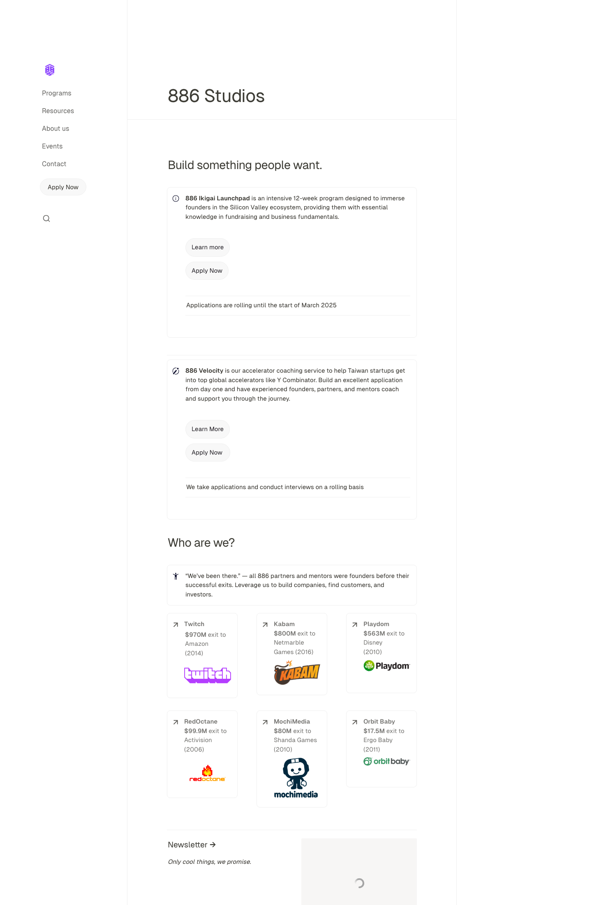
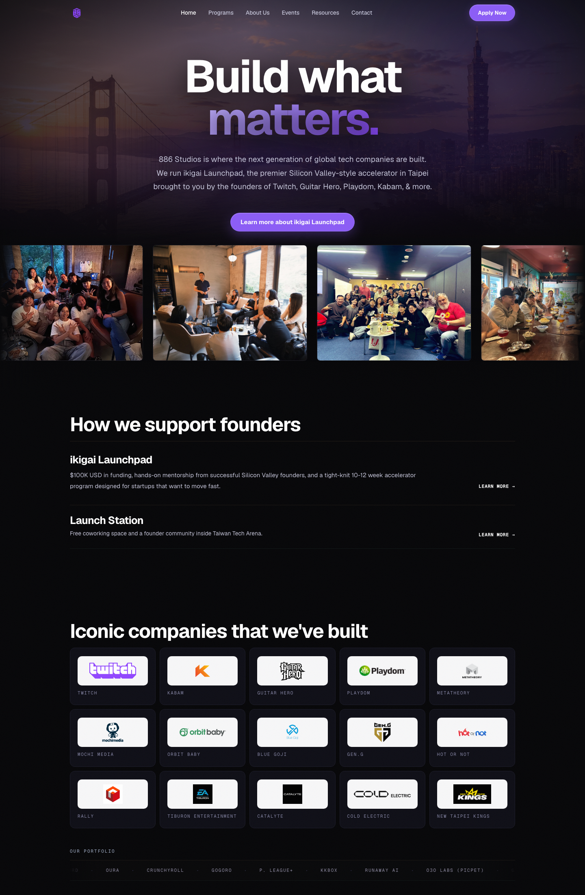
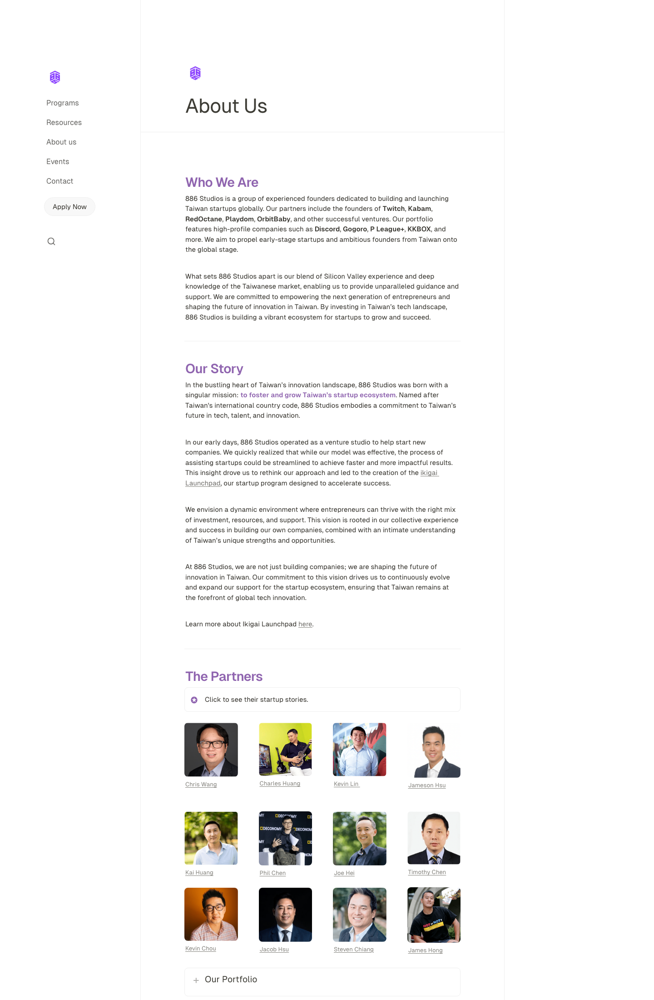
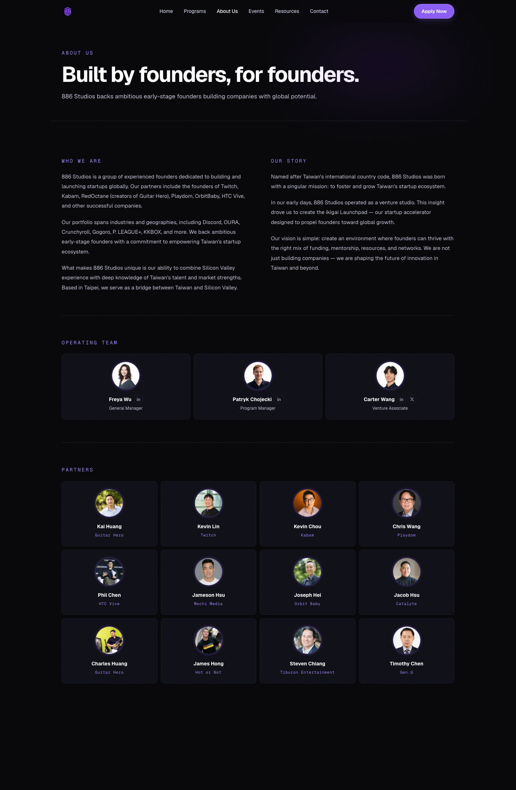
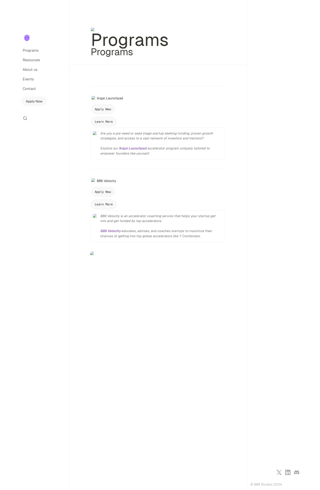
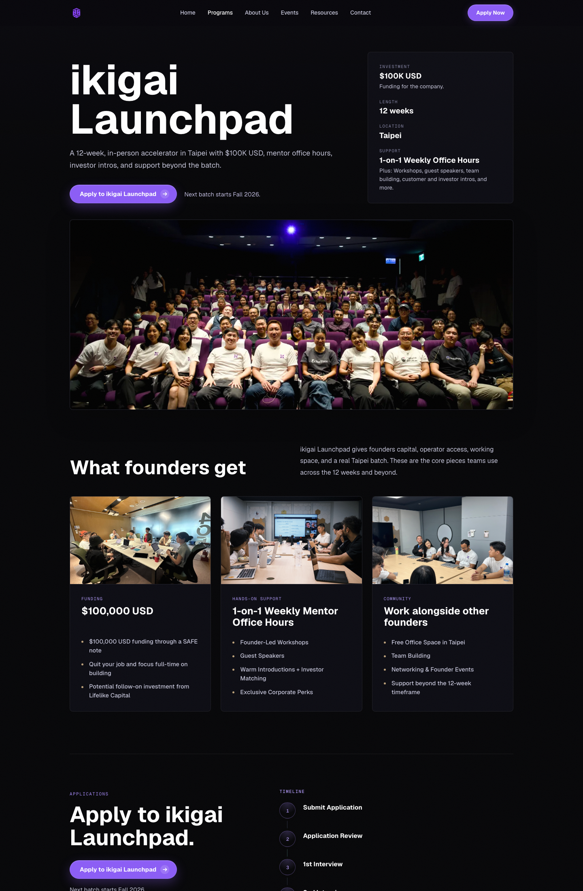

886 Studios Before / After
Simple comparison screenshots for the landing page, about page, and programs page.
Landing Page


About Page


Programs Page


Simple comparison screenshots for the landing page, about page, and programs page.





